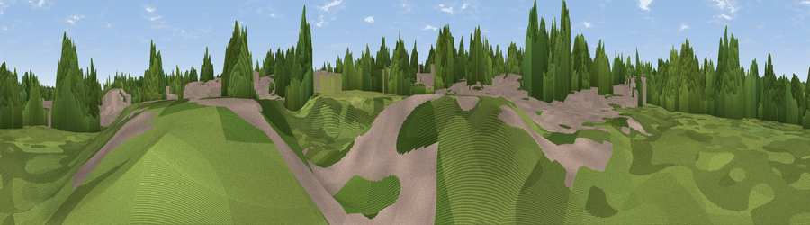

Viewpoint near East Finchley
#45782 in England · top 78% of its area beats it · near East FinchleyWhere it is
The exact computed spot (TQ 26058 90182). Click the marker for map links.
The view, rendered

A 360° render of this exact spot computed from the terrain model, tree cover and land cover — summer colours, afternoon light, calibrated against photographs of famous viewpoints. Real trees, hedges and buildings will differ in detail.
The panorama
Grey silhouette: terrain skyline in each direction (720 bearings, Earth curvature and refraction included). Dashed green: skyline with trees (+15 m) and buildings (+8 m) as obstacles. Blue strip: how far the ground is visible on each bearing.
Where the view opens
Wedge length = distance to the farthest visible ground on that bearing (vegetation-aware). Rings at 10, 25 and 50 km.
What fills the view
46% woodland · 38% built-up · 15% grassland
Angular shares of the visible panorama (visual magnitude), not map area. Landscape diversity 0.45 (0–1 Shannon).
Key numbers
More beautiful places nearby
The staircase of upgrades: each row has a higher view potential than everything closer. Driving times are estimates from straight-line distance, calibrated against real road routing — check an actual route before setting out.
| Place | Direction | Drive | Score |
|---|---|---|---|
| Viewpoint near Wood Green | E · 4 km | ~8 min | 51.8 |
| Harrow on the Hill | WSW · 11 km | ~21 min | 60.7 |
| Viewpoint near Chaldon | S · 36 km | ~55 min | 66.7 |
| Viewpoint near Caterham Valley | S · 38 km | ~56 min | 68.0 |
| Box Hill | S · 39 km | ~58 min | 70.4 |
| Viewpoint near Box Hill Village | S · 39 km | ~58 min | 71.0 |
| Beacon Hill | NW · 40 km | ~59 min | 74.1 |
| Viewpoint near Halton | WNW · 42 km | ~62 min | 74.3 |
51.59639, -0.18147 · source: osm viewpoint · position refined by local search. Computed location — check access rights before visiting.